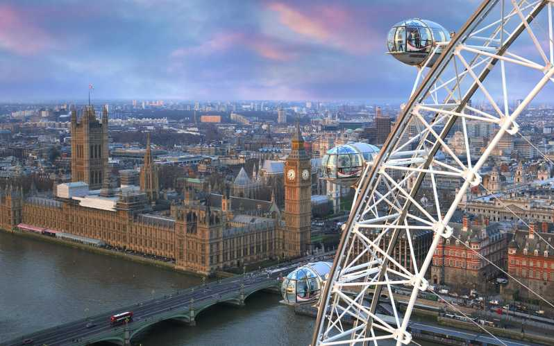

Bezienswaardigheden
Omdat london zo groot is ,zijn dit natuurlijk niet alle bezienswaardigheden maar dit zijn 5 bezienswaardigheden die je kunt doen in london. Je kunt dit makkelijk en snel bereiken met het overzichtelijke metronetwerk.
Prijzen
London is een welvarende stad die werkt met de britse pond. London staat bekend als 1 van de duurste steden in Europa, toch is london best goed te bezoeken als je niet zoveel te besteden hebt. Dit kun je doen met bijvoorbeeld tripadvisor.
top 5 hotels
Dit zijn de top 5 hotels van london.De eerste 4 zijn best prijzig, maar de 5de is iets goedkoper!
Hoe kun je het bereiken?
De stad kun je bereiken met de boot,het vliegtuig en de trein
De boot
De prijzen voor de veerboot die vanaf Rotterdam naar London gaan verschillen heel erg in prijzen en daarom kan ik je nu niet vertellen hoe duur het is. De prijzen beginnen ongeveer vanaf de 80 euro.
Het vliegtuig
Als je met het vliegtuig naar london wilt gaan, kun je het best vliegen vanaf Rotterdam airport naar Heathrow. Ook hier geldt dat de prijzen erg verschillen, dus hier kan ik je helaas geen antwoord op geven.
De trein
Ze hebben als connectie tussen nederland en london een tunnel gebouwd onder de rivier 'Het Kanaal' en kun je daarom nu met de trein naar london voor ongeveer 35-60 euro
Persoonlijke ervaring

Ik was in London voor 3 dagen in 2019. Ik wilde altijd al naar london. Ik vond het echt geweldig. Ik heb alle highlights gezien. De prijzen waren gemiddeld. Het was zeker niet goedkoop, maar er waren ook zeker mogelijkheden om goedkoop te kunnen eten.Ik had zeker een leuke tijd en zou zeker een keer terug willen. Echte aanraders zijn een stadswandeling en skygarden. Je had hier een supermooi 360 graden uitzicht over heel london. Deze bezienswaardigheid staat niet in het top 5 lijstje maar is ook zeker de moeite om te doen.